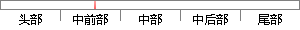

无论哪一个网站在建站的时候都会特别注意网页设计，再加上现在网页技术越来越先进，出现了越来越多精美的网页，丑陋的页面在其中无疑是“鹤立鸡群”。
片段位置图

相似结果|
1
原句片段：无论哪一个网站在建站的时候都会特别注意网页设计，再加上现在网页技术越来越先进，出现了越来越多精美的网页，丑陋的页面在其中无疑是“鹤立鸡群”。
相似片段 1：无论哪一个网站在建站的时候,都会特别注重网页设计,再加上现在网页技术越来越先进,很多网站都能将网页设计...
|
※ 片段修改建议 ※
近似词参考：- 无论：不管
- 哪一个：哪个
- 时候：时辰 时刻 时间
- 都会：城市 都邑 都市
- 设计：计划
- 现在：此刻 而今 目前 目下当今 如今
- 技术：手艺 技能
- 越来越：愈来愈
- 先进：进步前辈 先辈
- 出现：呈现 泛起 涌现
- 精美：精彩 优美 精致
- 丑陋：丑恶 貌寝
- 其中：此中 个中
- 鹤立鸡群：佼佼不群
系统自动生成语句：不管哪个网站在建站的时辰城市特别注意网页计划，再加上此刻网页手艺愈来愈进步前辈，呈现了愈来愈多精彩的网页，丑恶的页面在此中无疑是“佼佼不群”。
注：本片段修改建议为系统自动生成，仅供参考。